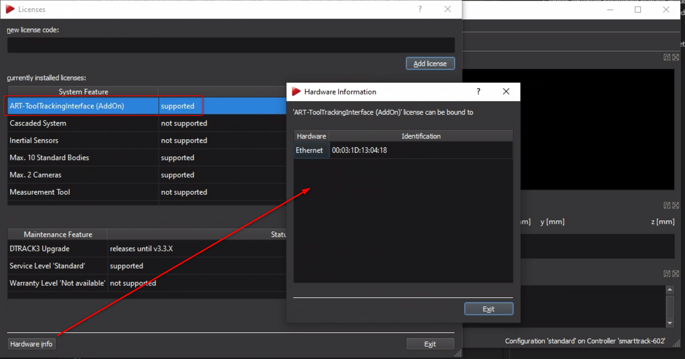
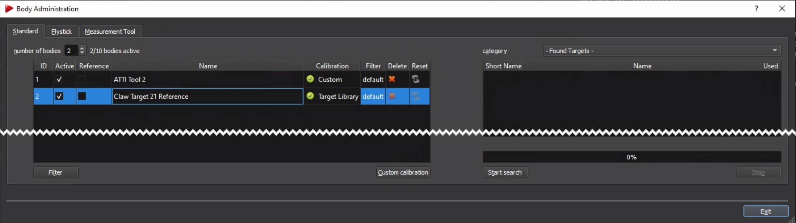

ART-DTrack Positioning and Tool Tracking
 ART DTrack is a realtime high precision infrared camera based tool tracking system with support for passive and active markers. It can be flexibly used with different tool types and models (tightening, riveting, hand-tracking using gloves, etc.) due to the passive markers. It is used to implement a large range of applications and is able to cover large rooms. Scalability is available from plug-and-play pre-calibrated stero cameras (
ART DTrack is a realtime high precision infrared camera based tool tracking system with support for passive and active markers. It can be flexibly used with different tool types and models (tightening, riveting, hand-tracking using gloves, etc.) due to the passive markers. It is used to implement a large range of applications and is able to cover large rooms. Scalability is available from plug-and-play pre-calibrated stero cameras (SmartTrack) for a quick start in typical single-user assembly stations up to large multi-camera setups for covering huge areas. OGS provides a deep integration including teaching positions and setting tolerance definitions directly from within the OGS gui. It also supports advanced positioning deatures like multi-tool tracking, angle deviation checking and realtime coordinate tracking view), so there is typically no need to run a seperate application to configure the system.
Note
One of the greatest features of the SmartTrack cameras is that they come factory-calibrated with linear cartesian coordinate system which provides mm-accuracy on all axis. With a few mouse clicks, the origin and orientation can be set using a provided ruler, so absolute measurements in workplace or workpiece-coordinates are possible out of the box!
Usage
If the system is correctly set up (see Initial system setup below for more details), then ...
Basic functionality
Workflow configuration
Teach-in
Initial system setup
OGS configuration
As described in OGS positioning overview, OGS provides all drivers needed to integrate ART-DTrack positioning into your project. However a few manual steps are still needed to configure the project:
- Load the tool tracking support in
config.lua - Configure the tracking parameters and tool, body, etc. mapping in
station.ini - Configure the OGS webserver and add the html pages to support the sidepanel teach-in ui to the project
positioning.lua driver in the project.
config.lua and station.ini
To load the tool tracking support, include the positioning.lua file in your project (through the config.lua requires list or directly by adding a
require('positioning) somewhere in the code).
Adding it to the requires table in the projects config.lua will then look as follows:
-- add the shared folder (..\shared)
OGS.Project.AddPath('../shared')
requires = {
"barcode",
"user_manager",
"positioning", -- (1)
-- possibly more...
}
current_project.logo_file = '../shared/logo-rexroth.png'
current_project.billboard = 'http://127.0.0.1:60000/billboard.html'
- Add this line to include the
positioning.luadriver in the project.
As described in OGS positioning overview, OGS automatically scans the [OPENPROTO] and [CHANNELS] sections for positioning references. If found, then the assigned section is read to determine the driver to be used and to read the associated parameters.
To configure the ART DTrack/SmartTrack driver, the following configuration is needed (the sample shown below includes a single linked OpenProtocol tool, but you can link multiple tools to the ART driver, too):
[OPENPROTO]
CHANNEL_01=192.168.1.42
CHANNEL_01_TYPE=GWK
CHANNEL_01_PORT=4002
; --> this channel shall use ART positioning
CHANNEL_01_POSITIONING=POSITIONING_ART_CH1
; Define the tracking parameters for CHANNEL_01
;
[POSITIONING_ART_CH1]
; Use the AR-Tracking positioning system
DRIVER=ART
; Positioning timeout in milliseconds. Defines the grace time before enable
; is removed for the tool, when leaving a position. If not set, defaults to 0.
TIMEOUT=1000
; Define the target tracker and tool adapter for this tool
; Target-ID: this is the model of the target mounted to the tool. By default,
; T1-T8 are provided, other targets can be defined in "targets.atti"-file
TARGET_ID=T5
; Target-Mount-ID: specify the adapter geometry, so the ART driver can calulate
; the tool center point depending on where the target is mounted on the tool.
; By default, "Rexroth ESA030G" and "GWK Operator Plus" are provided, custom
; mounts may be added in "targetmounts.atti"
TARGET_MOUNT_ID=Rexroth ESA030G
; Default-length of the adapter mounted to the tool (tool center point)
OFFSET_MM=0
; Define The ART system setup
;
[POSITIONING_ART]
; Define the IP-Address of the SmartTrack camera system
IP=10.10.2.108
; If you want to use custom targets or custom target_mounts, then you can
; specify these in "targets.atti" and "targetmounts.atti" in the following
; folder. If the folder is not specified, it defaults to the current projects
; folder.
;DB_FOLDER=
; If you want to set the reference tracker, then add the name of the tracker here.
; NOTE: the reference tracker must be configured through DTrack and *must* have
; then name "reference" or "referenz" (case insensitive) as part of the
; body name, else it will not be accepted.
REFERENCE_TRACKER=Claw Target 21 Reference
The ART system parameters must be set in the [POSITIONING_ART] section in station.ini. The following parameters are available:
IP(required): Defines the hostname or IP address of the SmartTrack camera to use. See DTrack configuration below for more information about setting up the camera itself.DB_FOLDER(optional): Defines the folder, where the ART driver searches for custom target or tool mount definition data. If not given, defaults to the current OGS project folder.REFERENCE_TRACKER(optional): If a reference tracker (for relative positioning) shall be used, then the name of the body must be entered here. Note that the name must include the workreference(see nominating a reference tracker below). If not given or empty, then no reference tracker is used (absolute coordinates based on the camera coordinate system).
For each tool, additional parameters are set through a seperate section linked to the tool. The tool specific section uses the following parameters:
DRIVER(required): Defines the driver to use. Must be set toARTto use the DTrack/SmartTrack system.TIMEOUT(optional): Defines a grace timeout if the tool gets out of position for a small time. If the tool returns into position before the time is exceeded, the enable signal is kept active. If the tool is out of position for longer than the given time, it gets disabled. If not given, it defaults to 0s.TARGET_ID(required): Defines the type of the target (body) mounted to the tool. The current version includes the predefined bodies T1-T8, other targets can be defined in "targets.atti"-file (see custom bodies and tool mounts below)TARGET_MOUNT_ID(required): Defines the adapter geometry to use, so the ART driver can calulate the tool center point depending on where the target is mounted on the tool. The current version includes the "Rexroth ESA030G" and "GWK Operator Plus" adapter definitions. Custom mounts may be added in "targetmounts.atti" (see custom bodies and tool mounts below)OFFSET_MM(optional, default = 0): Defines the default-length of the adapter mounted to the tool (distance to tool center point). Note, that the bit/socket length can also be specified when defining the positioning tolerances for a bolt.
 Note that the body specified in
Note that the body specified in TARGET_ID and the tool adapter specified in TARGET_MOUNT_ID together define the coordinate system for the tool, so the tool center point (as shown in the graphic) is the tip of the tools square output drive connector. Note, that typically a socket holder or quick-change adapter is mounted - this should be specified in the OFFSET_MM, so the offset compensates for the adapter length. Finally any bit or socket added will change the tool center point - but this is then defined by bit/socket/bolt in the OGS teach-in settings.
Custom bodies and tool mounts
Custom bodies and tool mounts are defined by adding their geometric data (please contact ART) into the following files (the location is defined through the DB_FOLDER setting, see above):
targets.atti: Defines additional bodiestargetmounts.atti: Defines additional (tool specific) target mounts/adapters
DTrack configuration
Usually, there is no need to use DTrack for SmartTrack camera setups, as OGS configures the relevant parameters needed for data exchange automatically. However it is recommended to install DTrack anyway and run it for the following:
- Search for cameras to find the IP addresses (must be added to OGS
station.ini, see above). To change the IP address of a Camera, see changing SmartTrack IP address below. - nominate a reference traget (see nominating a reference tracker below)
- Check tracker/target visibility (for quick debugging)
- Setup gain levels/filtering (to optimize the camera view)
See the DTrack system manual for more details.
Note
Please make sure to not run DTrack and OGS at the same time, as the camera data stream can only be consumed by one application!
Licensing
Using the camera with OGS requires a license for the ART-ToolTrackingInterface (AddOn). To check the state and eventually request a license, open DTRACK3 --> Licenses from the DTrack main menu. This will show the following dialog:

{kind=link}
If the state of the "system feature" ART-ToolTrackingInterface (AddOn) is "not supported", then click the Hardware Info button (hint: select one of the system features to enable the button) to get the cameras MAC address - this is required to request a license.
Nominating a reference tracker
To use a target (tracker, body) as a reference tag (so other trackers can report coordinates relative to this), the name of the body must be changed through DTrack.
To do so, open DTrack and select Tracking --> Body Administration (F8) from the main menu. This will show the following dialog:

{kind=link}
Select the body you want to rename and change its name (double click on the name) to include the word reference (lower/upper caps allowed).
If you can't see your bodies, then click the start search button to start DTrack searching for bodies in the current camera view area.
Important
To make a body a reference body, the name must include the work reference!
Changing SmartTrack IP address
The IP address of a SmartTrack camera can be conveniently read out by inserting an USB-thumbdrive into the cameras USB port (or a SD-Card for cameras with SD-Card slot), then waiting for the camera to sound a double-beep (usually takes about 2-5 seconds). After the beep, the thumbdrive can be removed and inserted into a PC. On the thumbdrive you will find two new files addad to the root-directory:
ART_Controller_<serno>_info.txt: This file has the current settingsART_Controller_<serno>_setup.txt: This file can be used to change the settings. It provides a template for modifying all parameters - to change, read the comments in the file and set the values according to your needs.
To change the IP address of the camera, modify one of the SETNET= sample parameters in the ART_Controller_<serno>_setup.txt file. Then save and unplug from the PC.
To actually update the changed parameters in the camera, do the following: - Plug the USB-thumbdrive into the camera - Wait until the camera beeps three times - Remove the USB-thumbdrive - Power cycle the camera
The settings will now be activated. If you want, you can inset the USB-thumbdrive again to readout the settings again.